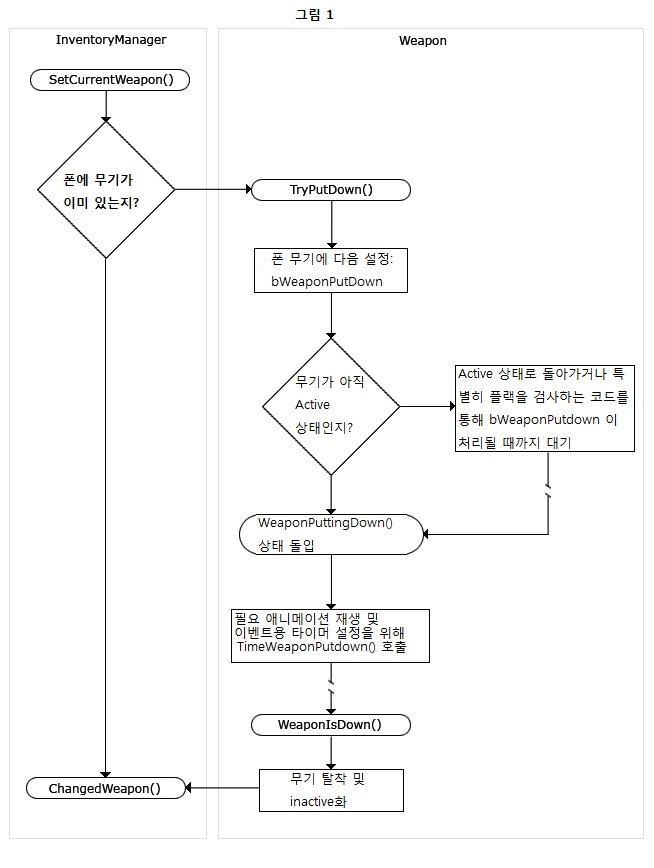
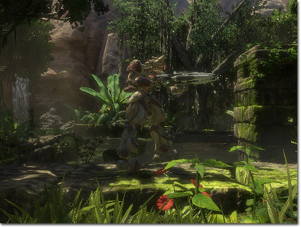
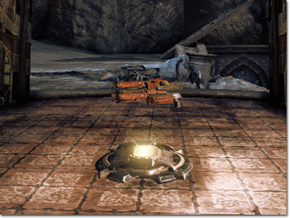
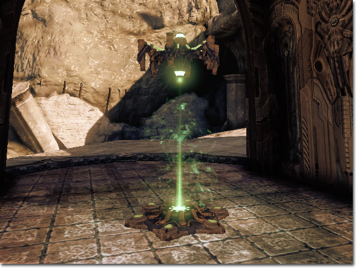
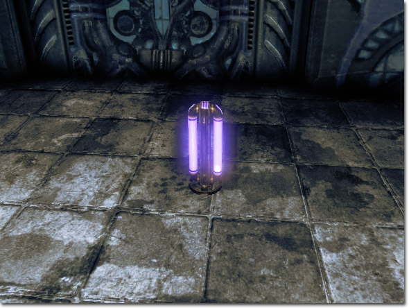

UDN
Search public documentation:
WeaponsTechnicalGuideKR
English Translation
日本語訳
中国翻译
Interested in the Unreal Engine?
Visit the Unreal Technology site.
Looking for jobs and company info?
Check out the Epic games site.
Questions about support via UDN?
Contact the UDN Staff
日本語訳
中国翻译
Interested in the Unreal Engine?
Visit the Unreal Technology site.
Looking for jobs and company info?
Check out the Epic games site.
Questions about support via UDN?
Contact the UDN Staff
UE3 홈 > 게임플레이 프로그래밍 > 웨폰 시스템 테크니컬 가이드
웨폰 시스템 테크니컬 가이드
문서 변경내역: Joe Wilcox 작성. Jeff Wilson 업데이트. 홍성진 번역.
개요
인벤토리
무기에 대한 인벤토리 관리
웨폰은 인벤토리의 자식으로, 폰의 인벤토리에 쥐어주는 데는 두 가지 방법이 있습니다. Pawn.GiveWeapon() 을 통해 폰에게 직접 주던가, DroppedPickup 또는 PickupFactory 액터를 통해 폰에게 할당하는 방법이 있습니다. DroppedPickup 은 무기가 월드에 놓일 때 생성되는 액터로, 웨폰의 물리적 존재를 나타냅니다. 플레이어가 아이템을 (의도적으로건 죽을 때건) 버릴 때 Inventory.DropFrom() 에서 생성됩니다. PickupFactory 액터는 보통 디자이너가 맵에다 놓은 액터를 나타냅니다. 이 액터는 줄 수 있는 인벤토리 아이템이 있는 지에 대한 것을 처리하며, 월드에서의 상태를 담당합니다. DroppedPickup 과 PickFactory 둘 다 기존 인벤토리 아이템을 집어다가 폰에 주는 것이며, Item.GiveTo() 함수를 통해 수행됩니다. 이 함수는 InventoryManager.AddInventory() 를 통해 폰의 인벤토리에 이 아이템을 추가하라고 InventoryManager에게 알려주는 함수입니다. 폰에 무기를 주는 둘째 방법은 Pawn.GiveWeapon() 을 통해서입니다. 이는 (GameInfo 또는 Mutator 같은) 비물리 액터가 무기를 자체적으로 스폰하지 않고도 폰에게 무기를 쉽게 주도록 허용하는 도우미 함수입니다. 이 작업은 InventoryManager.CreateInventory() 를 호출하여 만들려는 무기 클래스에 전달하여 수행됩니다. 무기를 폰에게 주고 나면, 사용하기 전에 활성화시켜야 합니다. 이는 전형적으로 사용자 입력을 통해서, 보통 PlayerController.NextWeapon() 또는 PlayerController.PrevWeapon() 및 InventoryManager.SwitchToWeaponClass() exec 함수를 통해 이루어 집니다. 이 함수는 일종의 로직을 수행한 후 새 무기가 결정될 즈음에 InventoryManager.SetCurrentWeapon() 을 호출합니다. SetCurrentWeapon() 은 무기 활성화 시작점입니다. 받는 파라미터는 DesiredWeapon 딱 하나로, 활성화시키려는 무기로의 참조가 되어야 하며 항상 로컬 클라이언트에서 호출되어야 합니다. 일단 호출되면 현재 무기를 내려놓(고 인벤토리로 되돌아가 비활성화되)게 하는 코드 체인을 착수합니다. 시스템 작동법에 대한 시각적 개요는 그림 1과 같습니다.
내려놓기 시퀸스가 끝나면 InventoryManager는 PendingWeapon 프로퍼티를 사용하여 전환할 무기를 결정합니다. SetCurrentWeapon() 은 프로퍼티를 설정하고 알려준 뒤 Weapon.TryPutDown() 을 호출합니다. 무기의 비활성화에 착수하는 함수입니다. Weapon.TryPutDown() 은 WeaponPuttingDown 상태로의 전환을 시도합니다. 시기가 적절하지 않으면 무기는 bWeaponPutDown 플랙 프로퍼티를 설정합니다. 내려놓기가 요청되었는지를 확인하는 대부분의 트랜잭션에서 검사되는 프로퍼티입니다. WeaponPuttingDown 상태로 들어갔던지 bWeaponPutDown 플랙을 설정했든지 해서 TryPutDown() 이 성공한 경우 참을, 아니면 거짓을 반환합니다. 무기 내려놓기에 성공한 경우, 해당 프로세스를 서버에서 착수시키기 위해 SetCurrentWeapon() 이 ServerSetCurrentWeapon() 을 호출합니다. 첫째, ServerSetCurrentWeapon() 은 TryPutDown() 이 클라이언트에서 성공했다고 가정합니다. 둘째, 리슨 서버를 고려해야 하며, InventoryManager가 로컬에서 제어되는 경우 TryPutDown() 의 서버측 호출을 제한합니다. 위의 과정 전반에서 무기가 이미 있음을 가정합니다. 아닌 경우 TryPutDown() 은 생략되며, 제어가 ChangedWeapon() 으로 바로 넘어갑니다. ChangedWeapon() 을 보기 전에, WeaponPutting 및 다른 무기 상태를 잘 살펴봐야 하겠습니다. 무기의 중요 상태는 여섯 가지가 있습니다:- Inactive - 비활성. 전형적으로 무기는 사용중이지 않을 때는 Inactive 상태입니다. 이 상태의 무기는 감춰졌으며, StartFire()/EndFire() 이벤트를 받지 않음을 뜻합니다.
- Active - 활성. 무기를 손에 쥐긴 했으나 발사하지 않는 상태가 Active 상태입니다. 이 상태에서 StartFire() 가 호출되면 발사 시퀸스가 착수됩니다.
- WeaponEquipping - 착용중인 무기. 무기(의 Activate() 함수를 호출하여) 첫 활성화 이후에는 WeaponEquipping 상태에 들어가게 됩니다. 여기서 "꺼내기" 애니메이션과 효과 등이 재생되게 됩니다. Active가 되는데 걸리는 시간은 TimeWeaponEquipping() 에 의해 조절됩니다.
- WeaponPuttingDown - 내려놓는 무기. 이 상태는 무기를 내려놓으면서 비활성화되는 상태를 말합니다. 전형적으로 TryPutDown() 함수나 bWeaponPuttingDown 의 지연 검사에 의해 들어가게 됩니다. WeaponEquipping 처럼, 애니메이션이나 효과를 재생하게 되며, 시간은 TimeWeaponPutDown() 를 사용합니다.
- PendingClientWeaponSet - 계류(pending)중인 클라이언트 웨폰 세트. 클라이언트 측에서만 들어가게 되는 특수 상태입니다. 활성화는 되었는 데 (instigator(유발자)나 소유자같은) 초기 및 중요 정보가 아직 리플리케이트(replicate)되지 않은 경우 무기는 이 상태에 들어가게 됩니다. 이 상태에 빠지면 무기는 주기적 검사를 수행해서 이와 같은 값이 도착했는가를 확인합니다. 도착하면 WeaponEquipping 상태로 넘어갑니다.
- Firing - 발사중. 중노동을 하는 상태입니다. 보통 FiringStatesArray 에 'Firing' 으로 지정되어 있는 StartFire 에 의해 트리거됩니다.
무기
무기 발사 모드
언리얼의 무기는 여러가지 모드가 있을 수 있습니다. 기본적으로 이는 Fire(발사)와 Alt Fire(대체 발사)이며, 각각 좌클릭과 우클릭으로 동작합니다. 각 발사 모드는 완전히 다르게 동작할 수 있습니다. 링크 건을 예로 들어 봅시다. 기본 발사 모드는 플라즈마 발사체를 쏘는 것이지만, 대체 발사 모드는 빔을 계속 발사합니다. 이 둘은 완전히 다르며, 각각의 기능을 코드가 담당하도록 처리해야 합니다. 각기 다른 발사 모드에 대한 메카니즘이 있는 경우, 무기에는 둘 이상의 발사 모드가 포함될 수 있습니다. 기본 시스템에 내장된 무언가는 아닙니다. 입력 시스템에 대한 바인딩을 새로 생성해야 하며, 그런 함수성 추가를 용이하게 해 주는 새로운 메쏘드를 추가시킬 수도 있겠습니다.무기 발사 유형
무기가 발사되는 방법이나 적중( 또는 영향) 대상은 현재 발사 모드의 발사 유형에 의해 제어됩니다. 언리얼은 기본적으로 두 가지 발사 유형이 정의되어 있습니다. Instant Fire(즉시 발사) 및 Projectile Fire(발사체 발사) 입니다. 즉시 발사는 이름 그대로입니다. 발사 즉시 뭐가 맞았는지, 맞았으면 얼마만큼의 데미지를 줄지 아니면 달리 처리할지 등을 결정합니다. 발사체 발사 역시 이름대로 입니다. 발사체 발사 모드로 발사했을 경우, 새로운 발사체를 스폰하여 무기가 조준하고 있는 방향으로 내보냅니다. 그리고서 발사체가 뭘 때렸는지, 얼마만큼의 데미지를 입힐지, 다른 결과를 낼지 등에 대한 결정권을 넘겨받게 됩니다. 여기 정의된 발사 모드에 추가로, 둘 다 원한다면 변경할 수도 있고, Custom Fire(커스텀 발사) 유형 또한 있습니다. 이 유형의 동작은 정의되지 않았으며, 원하는 대로 맞추어 쓸 수 있습니다. 어떤 무기 효과든 상상해서 구현할 수 있는 매우 유연한 무기 시스템입니다.발사 시퀸스
활성 무기가 생기면, 이 무기는 플레이어 콘트롤러로부터 발사 이벤트를 받기 시작할 수 있습니다. 발사 코드 패쓰(path)를 살펴보기 전에, Weapon.uc의 다양한 선언은 물론 HasAmmo() 같은 인벤토리 함수도 살펴봐야 할 겁니다. 기본적으로 UE3 무기 시스템에는 탄환 처리용 토막 함수만 포함되어 있으며, 실제 구현은 게임에 남아 있습니다. 아래는 발사 시퀸스에 대한 간략한 개요인 Weapon.uc의 주석 부분입니다.무기 발사 로직
여기 무기 시스템은 Authoritive(권한) 서버와 로컬 클라이언트 둘 다에 동일한 흐름을 따르는 단일 코드 패쓰가 되게끔 디자인되었습니다. 원격 클라이언트는 무기에 대해 아무것도 모르며, 최종 결과를 확인하기 위해 WeaponAttachment 시스템을 활용합니다.- 로컬 클라이언트의 InventoryManager(IM)가 StartFire 호출을 받습니다. StartFire() 를 호출합니다.
- 로컬 클라이언트가 Authoritive가 아닌 경우, ServerStartFire() 를 통해 서버에 통지합니다.
- BeginFire() 를 통해 StartFire() 및 ServerStartFire() 가 동기화됩니다.
- BeginFire 는 다음의 발사 모드에 대해 PendingFire 플랙을 설정합니다.
- BeginFire 가 현재 상태를 살펴보고, Active 상태인 경우 FireStatesArray 배열에 정의된 대로 새로운 발사 상태로 이행하여 발사 시퀸스를 시작합니다. 이는 SendToFiringState 호출을 통해 수행됩니다.
- 발사 로직은 다양한 발사 상태에서 처리됩니다. 발사 상태는 다음을 관장합니다:
- 관련된 PendingFire 가 hot(도는) 경우 계속 발사
- 탄약이 떨어지면 새 무기로 이행
- 더이상 발사하지 않으면 "Active" 상태로 이행
- 로컬 클라이언트의 IM이 StopFire() 를 호출합니다.
- Weapon StopFire가 Authoritive 프로세스이지 않은 경우, ServerStopFire() 이벤트를 통해 서버에 통지합니다.
- EndFire() 호출을 통해 StopFire() 및 ServerStopFire() 를 동기화시킵니다.
- EndFire() 가 나가는 이 발사 모드용 PendingFire 플랙을 비웁니다.
/**
* FireAmmunition: 샷 발사에 관련된 로직을 전부 수행
* - 탄환 발사 (즉시 적중 또는 발사체 스폰)
* - 탄환 소비
* - 관련 효과 재생 (총성같은 것들)
*
* Network: LocalPlayer 및 Server
*/
simulated function FireAmmunition()
{
// 발사에 탄환 사용
ConsumeAmmo( CurrentFireMode );
// 로컬 플레이어인 경우, 발사 효과 재생
PlayFiringSound();
// 다른 발사 유형 처리
switch( WeaponFireTypes[CurrentFireMode] )
{
case EWFT_InstantHit:
InstantFire();
break;
case EWFT_Projectile:
ProjectileFire();
break;
case EWFT_Custom:
CustomFire();
break;
}
}
무기 프로퍼티
이 프로퍼티는 베이스 Weapon 클래스에서 찾을 수 있습니다. 애들은 언리얼의 모든 무기에 공통이며, 기본 및 일반 무기 함수기능에 지속됩니다. AI- ShouldFireOnRelease - (놓을때 발사할지) 각 발사 모드에서 발사 버튼을 놓을 때 무기를 발사할 지 여부를 AI에게 알려줍니다. 값 0은 누를 때 발사함을 뜻합니다. 다른 값은 놓을 때 발사합니다.
- bInstantHit - (즉시 적중) 참이면 무기가 즉시 적중 무기라고 AI에게 알려줍니다.
- bMeleeWeapon - (근접 무기) 참이면 무기가 근접 무기라고 AI에게 알려줍니다.
- AIRating - (AI 평가) 봇이 인벤토리의 어떤 무기를 사용할지, 이 무기를 집을 지를 결정하는 데 있어 얼마나 좋은 무기인지를 지정합니다.
- FiringStatesArray - (발사 상태 배열) 각 발사 모드에 사용할 발사 상태 목록입니다. 기본 시스템은 WeaponFiring 상태를 사용합니다.
- WeaponFireTypes - (무기 발사 유형) 각 발사 모드에 사용할 발사 유형 목록입니다. EWFT_InstantHit - 무기가 샷을 바로 추적하여 명중 여부를 결정하고 즉시 효과를 냅니다. EWFT_Projectile - 무기가 조준선 쪽으로 새 발사체를 스폰합니다. EWFT_Custom - 커스텀 발사 시퀸스를 구현해야 합니다. EWFT_None - 발사되지 않는 무기입니다.
- WeaponProjectiles - (무기 발사체) 각 발사 모드의 발사체에 사용할 클래스 목록이며, EWFT_Projectile 발사 모드를 사용한다 가정합니다.
- FireInterval - (발사 간격) 무기 발사 한 번에 걸리는 시간을 설정합니다.
- Spread - (분산) 각 발사 모드에 사용할 샷 사이의 분산 시간을 설정합니다.
- InstantHitDamage - (즉시 적중 데미지) 각 발사 모드에 대해 이 무기의 즉시 적중 샷이 입힐 데미지 양을 설정합니다.
- InstantHitMomentum - (즉시 적중 운동량) 각 발사 모드에 대해 이 무기의 즉시 적중 샷이 입힐 운동량을 설정합니다.
- InstanthitDamageTypes - (즉시 적중 데미지형) 각 발사 모드에 대해 이 무기의 즉시 적중 샷에 사용할 데미지 유형을 설정합니다.
- FireOffset - (발사 오프셋) 이 무기의 발사체를 스폰할 때 사용할 오프셋을 설정합니다.
- WeaponRange - (무기 거리) 무기의 최대 사정거리. InstantFire(), ProjectileFire(), AdjustAim() 등과 같은 함수에서 수행되는 추적에 사용됩니다.
- EquipTime - (장착시간) 이 무기를 장착하는 데 걸리는 시간을 설정합니다.
- PutDownTime - (내려놓기 시간) 이 무기를 내려놓는 데 걸리는 시간을 설정합니다.
- bWeaponPutDown - (무기 내려놓기) 참이면 현 상태 종료시 무기를 내려놓게 됩니다.
- bCanThrow - (던질수 있나) 참이면 플레이어가 이 무기를 던질 수 있습니다. 보통 기본 인벤토리에 있는 무기에 대해서는 거짓으로 설정됩니다.
- Mesh - 무기에 사용할 메시( 유형은 여기서 제한되지 않지만, 언리얼이 가정하기로는 스켈레탈 메시)를 설정합니다. 1인칭 메시입니다.
- DefaultAnimSpeed - (애님 속도 기본값) 기간이 지정되지 않았을 때 이 무기에서 재생할 애니메이션의 속도를 설정합니다.
무기 함수
탄환- GetProjectileClass - (발사체 클래스 구하기) 현재 발사 모드에 해당하는 발사체 클래스를 반환합니다.
- FireAmmunition - (탄환 발사) 현재 발사 모드에서 샷을 발사하는 데 관련된 로직, 예를 들어 InstantFire(), ProjectileFire(), CustomFire() 등의 호출을 전부 수행합니다.
- ConsumeAmmo [FireModeNum] - (탄환소비) 무기 발사시 탄환 수를 조절할 때 호출되는 토막 함수. 서브클래스로 이를 오버라이딩해야 합니다.
- FireModeNum - (발사 모드 번호) 탄환을 소비시킬 현재 발사 모드입니다.
- AddAmmo [Amount] - (탄환추가) 이 무기용 탄환을 추가하기 위해 호출되는 토막 함수. 서브클래스로 이를 오버라이딩해야 합니다.
- Amount - (양) 추가시킬 탄환의 양입니다.
- HasAmmo [FireModeNum] [Amount] - (탄환검사) 무기의 해당 발사 모드에 대해 탄환이 충분한지 여부를 반환합니다. 기본값은 항상 참 반환이므로 서브클래스에서 이를 오버라이딩해야 합니다.
- FireModeNum - (발사 모드 번호) 탄환 검사를 할 발사 모드입니다.
- Amount - (양) 옵션. 검사할 탄환의 양입니다. 지정되지 않으면 탄환이 있는지를 검사합니다.
- HasAnyAmmo - (탄환이 있는지) 발사 모드에 관계 없이 무기에 탄환이 있는지 여부를 반환합니다. 기본값은 항상 참 반환이므로 서브클래스에서 이를 오버라이딩해야 합니다.
- WeaponEmpty - (빈 무기) 무기 발사 도중 탄환이 떨어졌을 때 호출되는 토막 함수입니다. 서브클래스이세 이 함수를 오버라이드해야 합니다.
- IsFiring - (발사중인지) 무기가 현재 발사중인지 아닌지 여부를 반환합니다.
- GetAIRating - (AIRating 구하기) 이 무기에 대한 AIRating을 반환합니다.
- GetWeaponRating - (무기 평가 구하기) 얼마나 선호하는 무기인지를 나타내는 가중치를 반환합니다.
- CanAttack [Other] - (공격가능) 무기가 지정된 액터를 공격할 수 있는 거리 내에 있는지를 반환합니다. 기본값은 항상 참 반환이므로 서브클래스에서 이를 오버라이딩해야 합니다.
- Other - 액터의 공격 대상을 가리킵니다.
- FireOnRelease - (놓을 때 발사) 무기가 버튼을 놓을 때 발사할지 여부를 반환합니다.
- NotifyWeaponFired [FireMode] - (무기 발사 통지) 무기가 발사되었음을 AI에게 통지합니다.
- FireMode - (발사 모드) 발사된 발사 모드입니다.
- NotifyWeaponFinishedFiring [FireMode] - (무기 발사 종료 통지) 무기 발사가 중지되었음을 AI에게 통지합니다.
- FireMode - (발사 모드) 발사 중지된 발사 모드입니다.
- RecommendLongRangedAttack - (장거리 공격 추천) 이 무기가 장거리 공격에 적합한지 여부를 반환합니다.
- GetViewAxes [XAxis] [YAxis] [ZAxis] - (뷰 축 구하기) 무기 소유자의 기본 뷰 조준 회전 축을 출력합니다.
- XAxis - 출력. X-축 콤포넌트를 출력합니다.
- YAxis - 출력. Y-축 콤포넌트를 출력합니다.
- ZAxis - 출력. Z-축 콤포넌트를 출력합니다.
- GetAdjustedAim [StartFireLoc] - (조절된 조준 구하기) 무기, 폰, 콘트롤러의 무기가 가리키는 곳을 바로 조절할 수 있게 합니다.
- StartFireLoc - (발사 시작 위치) 샷이 발사된 초기 위치입니다.
- AddSpread [BaseAim] - (분산 추가) 기본 조준 회전기에 발사 분산 오프셋을 추가하고, 조절된 조준 회전을 반환합니다.
- BaseAim - (기본 조준) 기본 조준 회전값입니다.
- GetTargetDistance - (타겟 거리 구하기) 카메라에서부터 뷰포트 중앙의 무언가에까지 이르는 대략의 화면 거리를 계산합니다. 눈의 피로를 줄이기 위해 조준선을 입체화하는 데 좋습니다.
- AdjustFOVAngle [FOVAngle] - (시야각 조절) 무기가 플레이어의 시야를 변경 및 조절된 시야각을 반환할 수 있게 해 주는 토막 함수입니다. 서브클래스로 이 함수를 오버라이딩해야 합니다.
- FOVAngle - (시야각) 입력 시야각입니다.
- GetPhysicalFireStartLoc [AimDir] - (물리적 발사 시작 위치 구하기) 조준방향을 따라 폰의 충돌을 끌어들인 발사체 스폰용 월드 위치를 반환합니다.
- AimDir - (조준 방향) 옵션. 무기가 조준하고 있는 방향입니다.
- GetDamageRadius - (데미지 반경 구하기) 현재 발사 모드에 대한 발사체의 데미지 반경을, 즉시 적중인 경우엔 0을 반환합니다.
- PassThroughDamage [HitActor] - (관통 데미지) 이 무기의 즉시 적중 샷을 지정된 액터에 명중시킬지 무시할지 여부를 반환합니다.
- HitActor - (명중 액터) 테스트할 액터를 가리킵니다.
- ProcessInstantHit [FiringMode] [Impact] [NumHits] - (즉시 적중 처리) 즉시 적중 샷을 처리합니다. 명중 액터에 데미지를 주고 필요한 효과를 스폰합니다.
- FirignMode - (발사 모드) 샷을 발사한 모드입니다.
- ImpactInfo - (충격 정보) 명중 액터에 대한 정보입니다.
- NumHits - (명중 횟수) 옵션. 데미지를 적용할 명중 횟수입니다. 샷건과 같은 멀티힛 무기에 좋습니다.
- PlayFireEffects [FireModeNum] [HitLocation] - (발사 효과 재생) 발사하는 무기용 (총구 플래시 등의) 발사 효과 재생 토막 함수입니다. 서브클래스로 이 함수를 오버라이딩해야 합니다.
- FireModeNum - (발사 모드 번호) 효과를 재생할 발사 모드입니다.
- HitLocation - (적중 위치) 옵션. 효과 재생에 사용할 위치입니다.
- StopFireEffects [FireModeNum] - (발사 효과 중지) 활성화된 효과 중지용 함수 토막입니다. 서브클래스로 이 함수를 오버라이딩해야 합니다.
- FireModeNum - (발사 모드 번호) 발사 효과를 중지할 발사 모드입니다.
- IncrementFlashCount - (플래시 수 증가) 원격 클라이언트에서 무기 발사 효과를 재생하는 데 사용되는 폰의 FlashCount 변수를 증가시킵니다.
- ClearFlashCount - (플래시 수 비움) 폰의 FlashCount 변수를 비웁니다.
- SetFlashLocation [HitLocation] - (플래시 위치 설정) 발사 효과 재생용으로 모든 클라이언트에 리플리케이트시킬 무기 발사 적중 위치를 설정합니다.
- HitLocation - (적중 위치) 무기 발사 적중 위치입니다.
- ClearFlashLocation - (플래시 위치 비움) 플래시 위치를 비우고 무기 발사 효과를 중지합니다.
- GetMuzzleLoc - (총구 위치 구하기) 비주얼 효과 스폰용 월드 위치를 반환합니다.
- StartFire [FireModeNum] - (발사 시작) 발사 프로세스 시작을 위해 로컬 플레이어에서 호출됩니다. 서버로 호출을 전달하며, 발사 효과를 로컬에서 시뮬레이팅합니다.
- FireModeNum - (발사 모드 번호) 발사된 발사 모드입니다.
- ServerStartFire [FireModeNum] - (서버 발사 시작) 발사 프로세스를 시작 및 모든 클라이언트에 리플리케이트하기 위해 서버에서 호출됩니다.
- FireModeNum - (발사 모드 번호) 발사된 발사 모드입니다.
- BeginFire [FireModeNum] - (발사 시작) 지정된 발사 모드를 계류(pending) 설정합니다. 발사 프로세스를 동기화하기 위해 로컬 플레이어와 서버가 호출합니다.
- FireModeNum - (발사 모드 번호) 발사된 발사 모드입니다.
- StopFire [FireModeNum] - (발사 중지) 발사중인 무기 발사를 중지하기 위해 로컬 플레이어가 호출합니다.
- FireModeNum - (발사 모드 번호) 발사 중지할 발사 모드입니다.
- ServerStopFire [FireModeNum] - (서버 발사 중지) 발사중인 무기의 발사를 중지하고 모든 클라이언트에 리플리케이트시킬 때 서버에서 호출합니다.
- FireModeNum - (발사 모드 번호) 발사 중지할 발사 모드입니다.
- EndFire [FireModeNum] - (발사 종료) 지정된 발사 모드를 더이상 계류(pending)하지 않도록 설정합니다. 모든 클라이언트의 셧다운 프로세스를 동기화하기 위해 서버에서 호출됩니다.
- FireModeNum - (발사 모드 번호) 발사 중지할 발사 모드입니다.
- ForceEndFire - (강제 발사 종료) 로컬 클라이언트에서 모든 발사 모드의 발사를 중지합니다. 리플리케이트되지 않습니다.
- SendToFiringState [FireModeNum] - (발사 상태로 전송) 무기를 지정된 발사 모드의 발사 상태로 놓으며, 해당 발사 모드를 현재로 설정합니다.
- FireModeNum - (발사 모드 번호) 현재로 설정할 발사 모드입니다.
- SetCurrentFireMode [FiringModeNum] - (현재 발사 모드 설정) 지정된 발사 모드를 현재로 설정합니다.
- FiringModeNum - (발사중인 모드 번호) 현재로 설정할 발사 모드입니다.
- FireModeUpdated [FiringMode] [bViaReplication] - (업데이트된 발사 모드) 무기 소유자의 FiringMode가 변경되었을 때 호출됩니다.
- FiringMode - (발사중 모드) 발사중인 모드입니다.
- CalcWeaponFire [StartTrace] [EndTrace] [Impactlist] [Extent] - (무기 발사 계산) 즉시 발사 샷을 시뮬레이트하여 첫 적중 지오메트리를 반환값으로 반환합니다. 이 함수로부터는 데미지가 발생하지 않습니다. 샷에 적중된 목록을 구하는 데만 쓰입니다.
- StarTrace - (추적시작) 추적을 시작할 위치입니다.
- EndTrace - (추적종료) 추적을 종료할 위치입니다.
- ImpactList - (충격목록) 옵션. 출력. 발사 시뮬레이션 도중 발생한 충격 전체 목록을 출력합니다.
- Extent - (규모) 옵션. 수행할 추적의 규모입니다.
- InstantFire - (즉시 발사) 즉시 발사 샷을 수행합니다. 액터 적중 구하기 및 적중 처리용 ProcessInstantHit() 에 CalcWeaponFire() 를 사용합니다.
- ProjectileFire - (발사체 발사) 발사체 발사 표시를 수행합니다. 무기가 조준하는 방향으로 발사체를 발사하고, 클라이언트에게 무기가 발사되었음을 통지합니다.
- CustomFire - (커스텀 발사) 커스텀 발사 모드 구현용 함수 토막입니다. 발사체나 즉시 적중 발사 모드를 사용하지 않는 서브클래스는 커스텀 발사 함수성을 추가하기 위해 이 함수를 오버라이딩해야 합니다.
- GetPendingFireLength - (계류중 발사 길이 구하기) 이 무기의 모든 발사 모드에 대한 계류중인 발사를 담는 배열의 길이를 반환합니다.
- PendingFire [FireMode] - (계류중 발사) 지정된 발사 모드에 이 무기에 대한 계류중인 발사가 있는지 여부를 반환합니다.
- FireMode - (발사 모드) 계류중인 발사를 검사할 발사 모드입니다.
- SetPendingFire [FireMode] - (발사 계류 설정) 지정된 발사 모드를 계류중인 것으로 설정합니다.
- FireMode - (발사 모드) 설정할 발사 모드입니다.
- ClearPendingFire [FireMode] - (발사 계류 해제) 이 무기에 대해 지정된 발사 모드가 더이상 계류중이지 않은 것으로 설정합니다.
- FireMode - (발사 모드) 설정할 발사 모드입니다.
- MaxRange - (최대 거리) 이 무기를 발사할 때 도달할 수 있는 최대 거리를 반환합니다.
- GetFireInterval [FireModeNum] - (발사 간격 구하기) 무기의 지종된 발사 모드에 대한 샷 사이의 간격을 초 단위로 반환합니다.
- FireModeNum - (발사 모드 번호) 간격을 구할 발사 모드입니다.
- TimeWeaponFiring [FireModeNum] - (무기 발사 시간) RefireCheckTimer() 함수를 실행하는 발사 상태에 대한 타이머를 설정하고, 지정된 발사 모드에 대해 발사 간격만큼의 간격을 두고 반복합니다.
- FireModeNum - (발사 모드 번호) 타이머를 설정할 발사 모드입니다.
- RefireCheckTimer - (재발사 검사 타이머) 발사 상태에서 샷을 또 발사할지 여부를 검사하고, 참이면 발사합니다.
- GetTraceRange - (추적 범위 구하기) 무기가 CalcWeaponFire(), InstantFire(), ProjectileFire(), AdjustAim() 등의 추적에서 사용할 범위를 반환합니다. 서브클래스는 적절한 상태에서 이를 오버라이딩해야 합니다.
- GetTraceOwner - (추적 소유자 구하기) 이 무기의 추적을 소유하는 액터를 반환합니다. 추적시 액터를 강제로 무시할 때 사용합니다.
- GetPhsyicalFireStartLoc [AimDir] - 물리적 발사 시작 위치 구하기 [조준방향]
- HandleFinishedFiring - (완료된 발사 처리) 무기 발사가 완료되면 'Active' 상태로 되돌려 놓습니다.
- ShouldRefire - (다시발사할지) 무기 발사를 계속할지 여부를 반환합니다. 각 샷이 발사된 후 발사 상태로부터 호출됩니다. 기본 동작은 플레이어가 발사 버튼을 누르는 동안 발사 계속하기 입니다. 발사 상태에서의 동작을 바꾸기 위해 서브클래스에서 이 함수를 오버라이딩할 수 있습니다.
- StillFiring [FireMode] - (계속발사중) 무기가 지정된 발사 모드로 계속 발사중인지 여부를 반환합니다.
- FireMode - (발사 모드) 검사할 발사 모드입니다.
- ItemRemovedFromInvManager - (인벤 매니저에서 제거된 아이템) 플레이어의 인벤토리에서 무기가 제거되었음을 통지하기 위해 InventoryManager로부터 호출됩니다. 기본적으로 발사를 강제로 중지시키며 무기를 탈착시킵니다.
- IsActiveWeapon - (활성 무기인지) 이 무기가 현재 활성화되어 있는지 여부를 반환합니다.
- HolderDied - (소유자 사망) 무기에게 폰의 사망을 통지하기 위해 소유 폰에 의해 호출됩니다. 기본적으로 무기 발사를 중지합니다.
- DoOverrideNextWeapon - (다음 무기 오버라이딩 허용) 무기의 스위치를 다음 무기 함수성에 오버라이딩할 수 있게 합니다. 본질적으로 무기 발사 도중 마우스 휠( 또는 다음 무기로 전환하는데 지정한 것)을 사용할 수 있게 하는 것으로, 예를 들면 피직스 건이 쥔 물건의 거리를 바꾸는 데 사용하는 것입니다. 무기의 발사 상태에서만 사용되어야 하며, 그렇지 않으면 실제 무기 전환이 깨지게 됩니다.
- DoOverridePrevWeapon - (이전 무기 오버라이딩 허용) 무기의 스위치를 이전 무기 함수성에 오버라이딩할 수 있게 합니다. 무기의 발사 상태에서만 사용되어야 하며, 그렇지 않으면 실제 무기 전환이 깨지게 됩니다.
- DropFrom [StartLocation] [StartVelocity] - (버리기) Inventory에서 상속됩니다. 무기를 월드에 버립니다. 기본적으로 발사를 중지하고 무기를 탈착하며, 무기를 버리고 플레이어의 인벤토리에서 제거하기 위해 부모 클래스의 DropFrom() 함수를 호출합니다.
- StartLocation - (시작 위치) 무기를 버리기 시작할 위치입니다.
- StartVelocity - (시작 속도) 무기를 버릴 때의 속도입니다.
- CanThrow - (던질수 있는지) 플레이어가 이 무기를 던질수 있는지 여부를 반환합니다.
- DenyClientWeaponSet - (클라이언트 무기 설정 거부) 무기 전환을 거부해야할 지 여부를 반환합니다. 기본값은 항상 전환할 수 있도록 거짓 반환입니다.
- TimeWeaponPutDown - (무기 내려놓기 시간) 무기 내려놓기가 완료되고서 WeaponIsDown() 실행까지의 타이머를 설정합니다.
- TimeWeaponEquipping - (무기 장착 시간) 무기 장착이 완료되고서 WeaponEquipped() 실행까지의 타이머를 설정합니다.
- Activate - (활성화) Inventory로부터 상속됩니다. 무기에 'WeaponEquipping' 상태를 전송하여 장착 절차를 시작합니다.
- PutDownWeapon - (무기 내려놓기) 무기에 'WeaponPuttingDown' 상태를 전송하여 무기 내려놓기 절차를 시작합니다.
- DenyPickupQuery [ItemClass] [Pickup] - 픽업 질의 거부 [아이템 클래스] [픽업]
- TryPutDown - (내려놓기 시도) 무기 내려놓기를 시도합니다. 무기 내려놓기가 가능하면 참을 반환합니다.
- WeaponIsDown - (무기를 내려놨는지) 무기를 내려놨을 때 호출되는 함수 토막. 적절한 조치를 취하게 하려면 서브클래스에서 이를 오버라이딩해야 합니다.
- ClientWeaponThrown - (클라이언트 무기 던짐) 클라이언트의 무기 던지기를 통지하기 위해 클라이언트에서 호출. 발사를 중지하고 무기를 탈착합니다.
- ClientGivenTo [NewOwner] [bDoNotActivate] - (클라이언트에서 건네줌) 무기가 새 폰에게 갔을 때 서버에 의해 호출됩니다.
- NewOwner - (새 소유자) 무기를 건네받은 폰을 가리킵니다.
- bDoNotActivate - (활성화시키지 않음) 참이면 이 무기를 자동으로 활성화시키지 않습니다.
- ClientWeaponSet [bOptionalSet] [bDoNotActivate] - (클라이언트 무기 설정) 인벤토리에 새 무기가 있음을 통지하고 새 무기로 전환할지 여부를 결정하기 위해 서버에 의해 호출됩니다.
- bOptionalSet - (옵션 설정) 참이면 새 무기로 바꿀지 여부를 결정하기 위해 폰의 인벤토리에 있는 무기의 가중치를 InventoryManager가 전부 비교하게 됩니다. 거짓인 경우 무기의 가중치와 무관하게 전환이 강제로 이루어집니다.
- bDoNotActivate - (활성화시키지 않음) 옵션. 참이면 이 무기를 자동으로 활성화시키지 않습니다.
- GetWeaponAnimNodeSeq - (무기 애님 노드 시퀸스 구하기) 무기가 애니메이션 재생을 위해 사용하는 AnimNodeSequence로의 참조를 반환합니다.
- PlayWeaponAnimation [Sequence] [fDesiredDuration] [bLoop] [SkelMesh] - (무기 애니메이션 재생) 무기의 메시에 있는 지정된 애니메이션을 재생합니다.
- Sequence - (시퀸스) 재생할 애니메이션 시퀸스의 이름입니다.
- fDesiredDuration - (원하는 기간) 애니메이션 재생을 지속시킬 기간입니다.
- bLoop - (루프) 옵션. 참이면 애니메이션 재생이 반복됩니다.
- SkelMesh - (스켈메시) 옵션. 애니메이션을 재생할 스켈레탈 메시 콤포넌트를 가리킵니다. 설정하지 않으면 무기의 기본 메시가 사용됩니다.
- StopWeaponAnimation - (무기 애니메이션 중지) 무기에 재생되는 애니메이션을 중지합니다.
- AttachWeaponTo [MeshCpnt] [SocketName] - (무기 부착) 무기의 메시를 지정된 위치에 부착시킵니다.
- MeshCpnt - (메시 콤포넌트) 부착시킬 스켈레탈 메시 콤포넌트를 담는 함수 토막입니다. 서브클래스로 이 함수를 오버라이딩해야 합니다.
- SocketName - (소켓 이름) 부착시킬 메시에 있는 소켓 이름입니다.
- DetachWeapon - (무기 탈착) instigator(인스티게이터)로부터 무기의 메시를 탈착시킬 함수 토막입니다. 서브클래스로 이 함수를 오버라이딩해야 합니다.
- WeaponPlaySound [Sound] [NoiseLoudness] - (무기 사운드 재생) 무기에 지정된 사운드를 재생합니다.
- Sound - (사운드) 재생할 사운드큐입니다.
- NoiseLoudness - (노이즈 크기) 옵션. 사운드를 재생할 볼륨입니다. 이 구현에는 사용되지 않습니다.
UDKWeapon 프로퍼티
UDKWeapon 클래스 자체에는 프로퍼티가 약간만 추가되어 있습니다. AI- bLeadTarget - (타겟 유도) 참(기본값)이면 무기가 타겟 액터로 유도됩니다. 즉시 명중 무기에는 무시됩니다.
- bConsiderProjectileAcceleration - (발사체 가속도 고려) 참이면 타겟 유도시 발사체의 가속도를 고려합니다.
- AmmoCount - (탄환 수) 이 무기용으로 플레이어가 갖고 있는 탄환 수입니다.
- OverlayMesh - (메시 오버레이) 오버레이 효과에 사용할 메시를 설정합니다.
UDKWeapon 함수
AI- BestMode - (최적 모드) 봇이 사용할 최적의 발사 모드를 반환하는 함수 토막입니다. 서브클래스로 이 함수를 오버라이딩해야 합니다.
- SetPosition [Holder] - (포지션 설정) 월드에 총 모델을 정렬시키는 함수 토막입니다. 서브클래스로 이 함수를 오버라이딩해야 합니다.
- Holder - (홀더) 무기를 쥐고 있는 폰을 가리킵니다.
UTWeapon 프로퍼티
UTWeapon 클래스의 프로퍼티 대부분은 총 스타일 무기쪽에 맞춰져 있습니다. 개별 무기의 작동 방식에 대해 무기 시스템이 상세해 지기 시작하는 곳입니다. AI- bFastRepeater - (빠른 연사) 참이면 AI이 이 무기를 스프레이나 빠르게 연사되는 무기로 간주합니다.
- AimError - (조준 에러) AI의 각 샷에 더할 최대 에러 양입니다.
- AimingHelpRadius - (조준 도움 반경) 근처로 빗나간 것을 실제로 적중한 것으로 간주시킬 범위입니다.
- bUseAimingHelp - (조준 도움 사용) 참이면 실제 적중 여부를 가리는 데 AimingHelpRadius 를 사용합니다.
- FireCameraAnim - (발사 카메라 애님) 무기 발사시 플레이어 카메라에서 재생할 카메라 애니메이션, 예를 들면 반동으로부터의 카메라 떨림 등입니다.
- WeaponColor - (무기 색) 게임내 HUD에 이 무기의 이름을 그리는 데 사용할 색입니다.
- WeaponCanvasXPct - (무기 캔버스 X축 %) 무기가 화면상의 X축에서 차지하는 비율.
- WeaponCanvasYPct - (무기 캔버스 Y축 %) 무기가 화면상의 Y축에서 차지하는 비율.
- PlayerViewOffset - (플레이어 뷰 오프셋) 오른손에 무기를 쥐고 있다 가정하고 무기를 배치하는 데 사용할 플레이어로부터의 오프셋. 왼손에 무기를 놓을 때는 -1로 곱하며, 중앙에 놓을 때는 제로 아웃 시킵니다.
- SmallWeaponOffset - (작은 무기 오프셋) 작은 무기를 사용할 때 적용할 부가 오프셋입니다.
- WideScreenOffsetScaling - (와이드 화면 오프셋 스케일) 와이드스크린 포맷으로 게임을 표시할 때 ViewOffset에 곱해줄 값입니다.
- WideScreenRotationOffset - (와이드 화면 회전 오프셋) 와이드스크린 포맷으로 게임을 표시할 때 적용할 회전 오프셋입니다.
- HiddenWeaponOffset - (숨긴 무기 오프셋) 숨긴 부기를 사용할 때만 사용되는 특수 오프셋. 빔을 부착하는 등의 특정 효과를 무기에 놓는 데 필요합니다.
- IconCoordinates - (아이콘 좌표) HUD에 이 무기용 아이콘을 그리는 데 사용되는 HUD의 IconHUDTexture 내 좌표입니다.
- CrossHairCoordinates - (조준선 좌표) HUD에 일반 조준선을 그리는 데 사용되는 이 무기의 CrosshairImage 내 좌표입니다.
- SimpleCrossHairCoordinates - (단순 조준선 좌표) HUD에 단순 조준선을 그리는 데 사용되는 이 무기의 CrosshairImage 내 좌표입니다.
- LockedCrossHairCoordinates - (잠금 조준선 좌표) HUD에 록온 조준선을 그리는 데 사용되는 이 무기의 CrosshairImage 내 좌표입니다.
- CustomCrosshairCoordinates - (커스텀 조준선 좌표) HUD에 커스텀 조준선을 그리는 데 사용되는 이 무기의 CrosshairImage 내 좌표입니다.
- CrosshairImage - (조준선 이미지) 이 무기용 조준선을 포함하는 텍스처입니다.
- StartLockedScale - (시작 잠금 스케일) 잠금 조준선의 최소 스케일 값입니다.
- FinalLocakedScale - (최종 잠금 스케일) 잠금 조준선의 최대 스케일 값입니다.
- CrosshairColor - (조준선 색) 이 무기의 조준선을 그릴 때 사용할 색입니다.
- CrosshairScaling - (조준선 스케일) 이 무기용 조준선의 스케일을 조절할 때 사용할 값입니다.
- bUseCustomCoordinates - (커스텀 좌표 사용) 참이면 SimpleCrossHairCoordinates 대신 CustomCrosshairCoordinates 값을 사용합니다.
- AmmoDisplayType - (탄환 표시 유형) HUD에 탄환 수가 표시되는 방법을 결정합니다.
- EAWDS_Numeric - 탄환 수를 텍스트로 표시합니다.
- EAWDS_BarGraph - 탄환 수를 바로 표시합니다.
- EAWDS_Both - 탄환 수를 바와 텍스트 둘 다로 표시합니다.
- EAWDS_None - HUD에 탄환 수 표시를 끕니다.
- MuzzleFlashSocket - (총구 플래시 소켓) 이 무기의 총구 플래시 효과에 부착할 때 사용할 소켓 이름입니다.
- MuzzleFlashPSC - (총구 플래시 PSC) 총구 플래시 효과에 사용할 파티클 시스템 콤포넌트입니다.
- MuzzleFlashPSCTemplate - (총구 플래시 PSC 템플릿) 주요 발사 모드용 총구 플래시 효과로 사용할 파티클 시스템입니다.
- MuzzleFlashAltPSCTemplate - (총구 플래시 대체 PSC 템플릿) 대체 발사 모드용 총구 플래시 효과로 사용할 파티클 시스템입니다.
- MuzzleFlashColor - (총구 플래시 색) 총구 플래시 파티클 시스템이 있는 경우, 'MuzzleFlashColor' 파라미터에 전달할 색입니다.
- bMuzzleFlashPSCLoops - (총구 플래시 PSC 루프) 참이면 총구 플래시 효과를 끄는 대신 반복되게 합니다. 미니건같은 속사 무기에 좋습니다.
- MuzzleFlashLight - (총구 플래시 라이트) 무기가 발사될 때 번쩍이는 빛입니다.
- MuzzleFlashLightClass - (총구 플래시 라이트 클래스) 총구 플래시 라이트에 사용할 클래스입니다.
- MuzzleFlashDuration - (총구 플래시 기간) 총구 플래시가 유지되는 기간입니다.
- AmmoPickupClass - (탄환 픽업 클래스) 이 무기에 탄환을 채우는 탄환 픽업 클래스입니다.
- LockerAmmoCount - (락커 탄환 수) 무기 락커에서 이 무기를 집었을 때의 초기 탄환 수입니다.
- MaxAmmoCount - (최대 탄환 수) 이 무기의 최대 탄환 수입니다.
- ShotCost - (샷 비용) 이 무기를 한 번 쏠때마다 드는 탄환 수입니다.
- MinReloadPct - (최소 재장전 %) 무기의 각 발사 모드에서 발사한 이후 무기 전환이 가능하기 까지 경과해야 하는 최소 시간입니다.
- bZoomedFireMode - (줌상태 발사 모드) 발사 모드가 뷰를 줌시킬지 여부를 결정합니다. 값 0은 줌이 없음을, 그 이외의 값은 줌이 있음을 뜻합니다.
- ZoomedTargetFOV - (줌상태 타겟 시야) 줌인했을 때 사용할 시야각입니다.
- ZoomedRate - (줌 속도) 줌 아닌 상태에서 줌 상태로, 또는 그 반대 상태로 이행할 때의 초당 줌 인/아웃 속도입니다.
- ProjectileSpawnOffset - (발사체 스폰 오프셋) 발사 시작 위치로부터 발사체의 스폰시 오프셋시킬 언리얼 유닛 거리입니다.
- ZoomedTurnSpeedScalePct - (줌상태 회전 속도 스케일 %) 플레이어가 줌인된 무기를 사용할 때의 회전 속도 조절에 사용되는 값입니다.
- InventoryGroup - (인벤토리 그룹) 무기가 속하는 인벤토리 그룹입니다. 숫자 키에 해당하는 0에서 9까지의 값으로 해당 키가 눌렸을때 이 무기가 장착되게 됩니다.?
- GroupWieght - (그룹 가중치) 인벤토리 그룹에서 이 무기의 위치. 같은 그룹에서 이 값이 높은 무기에 우선권이 있습니다.
- InventoryWeight - (인벤토리 가중치) 인벤토리에서의 이 무기 전체 우선권. 무기 전환시에 사용됩니다.
- bNeverForwardPendingFire - (계류중 발사 전달 금지) 참이면 이 무기는 전달된 계류중 발사를 받지 않습니다.
- AttachmentClass - (부착 클래스) 이 무기에 대한 부착 클래스입니다.
- WeaponFireAnim - (무기 발사 애님) 각 발사 모드에 대해 무기가 발사될 때 재생할 애니메이션입니다.
- ArmFireAnim - (팔 발사 애님) 각 발사 모드에 대해 무기가 발사될 때 플레이어 캐릭터의 팔 메시(가 있을 경우)에 재생할 애니메이션입니다.
- ArmsAnimSet - (팔 애님셋) 플레이어 캐릭터의 팔 메시에 재생되는 애니메이션에 사용할 애니메이션 세트입니다.
- WeaponPutDownAnim - (무기 내려놓기 애님) 무기를 내려놓을 때 재생할 애니메이션입니다.
- ArmsPutDownAnim - (팔 내려놓기 애님) 무기를 내려옿을 때 플레이어 캐릭터의 팔 메시에 재생할 애니메이션.
- WeaponEquipAnim - (무기 장착 애님) 무기를 장착할 때 무기에 재생할 애니메이션입니다.
- ArmEquipAnim - (팔 장착 애님) 무기를 장착할 때 팔 메시에 재생할 애니메이션입니다.
- WeaponIdleAnims - (무기 한산 애님) 무기가 한산할 때 무기에 재생할 애니메이션입니다.
- ArmIdleAnims - (팔 한산 애님) 무기가 한산할 때 플레이어 캐릭터의 팔 메시에 재생할 애니메이션입니다.
- PivotTranslation - (피벗 옮기기) 이 무기 픽업 메시 회전의 피벗을 오프셋시키는 데 사용할 벡터입니다.
- LockerRotation - (락커 회전) 무기 락커에 픽업 메시를 놓을 때 사용할 회전값입니다.
- LockerOffset - (락커 오프셋) 무기 락커에 픽업 메시를 놓을 때 사용할 오프셋값입니다.
- WeaponFireSnd - (무기 발사 사운드) 각 발사 모드에 대해 무기가 발사되었을 때 재생할 사운드큐입니다.
- WeaponPutDownSound - (무기 내려놓기 사운드) 무기를 내려놨을 때 재생할 사운드큐입니다.
- WeaponEquipSound - (무기 장착 사운드) 무기가 장착될 때 재생할 사운드큐입니다.
- ZoomInSound - (줌인 사운드) 무기가 줌인될 때 재생할 사운드큐입니다.
- ZoomOutSound - (줌아웃 사운드) 무기가 줌아웃될 때 재생할 사운드큐입니다.
UTWeapon 함수
이 함수는 먼저 UTWeapon 클래스에 정의된 것들입니다. 이 클래스의 함수 다수는 다른 웨폰 클래스로부터 상속된 것입니다. 다른 섹션에서 해당 설명을 찾을 수 있습니다. AI- RelativeStrengthVersus [P] [Dist] - (P에 대한 상대 세기) 지정된 폰에 대해 사용할 때 이 무기의 세기를 반환합니다.
- P - (폰) 검사 대상 폰을 가리킵니다.
- Dist - (거리) 무기에서부터 대상 폰까지의 거리입니다.
- BotDesireability [PickupHolder] [P] [C] - (봇 선호도) 정적임. AI의 무기 선호도를 반환합니다. AI가 어느 무기를 집으러 갈지 결정하려 할 때 호출됩니다.
- PickupHolder - (픽업 홀더) 무기에 대한 픽업을 가리킵니다.
- P - (폰) AI의 폰을 가리킵니다.
- C - (콘트롤러) AI의 콘트롤러를 가리킵니다.
- CanHeal [Other] - (치유가능) 이 무기가 지정된 액터를 치유할 수 있는지 여부를 반환합니다.
- Other - 치유할 액터를 가리킵니다.
- GetOptimalRangeFor [Target] - (이상적인 거리 구하기) 지정된 타겟에 발사하기에 이상적인 거리를 반환합니다.
- Target - (대상) 발사 대상이 될 액터를 가리킵니다.
- SuggestAttackStyle - (추천 공격 스타일) AI가 이 무기로 공격할 때 돌격할지 물러날지 여부를 반환합니다. 항상 0을 반환. 동작 방식을 바꾸려면 서브클래스에서 이를 오버라이딩해야 합니다.
- SuggestDefenseStyle - (추천 방어 스타일) AI가 이 무기로 방어할 때 돌격할지 물러날지 여부를 반환합니다. 항상 0을 반환. 동작 방식을 바꾸려면 서브클래스에서 이를 오버라이딩해야 합니다.
- RecommendRangedAttack - (원거리 공격 추천) 이 무기를 원거리 공격에 사용할지 여부를 반환합니다. 항상 거짓을 반환. 동작 방식을 바꾸려면 서브클래스에서 이를 오버라이딩해야 합니다.
- RangedAttackTime - (원거리 공격 시간) 이 무기로 원거리 공격을 하는 기간을 반환합니다. 항상 0을 반환. 동작 방식을 바꾸려면 서브클래스에서 이를 오버라이딩해야 합니다.
- SplashJump - (스플래시 점프) 스플래시 데미지를 향상시키기 위해 AI가 점프할지 여부를 반환합니다. 항상 거짓 반환. 동작 방식을 바꾸려면 서브클래스에서 이를 오버라이딩해야 합니다.
- ShouldFireWithoutTarget - (타겟 없이도 발사할지) AI에 타겟이 없을 때도 이 무기를 발사하게 할 지 여부를 반환합니다. 항상 거짓 반환. 지뢰를 발사하는 무기와 같이, 동작 방식을 바꾸려면 서브클래스에서 이를 오버라이딩해야 합니다.
- InstantFireTraceStart - (즉시 발사 추적 시작) 이 즉시 적중 샷의 추적 시작 위치를 반환합니다.
- InstantFireTraceEnd [StartTrace] - (즉시 발사 추적 끝) 이 즉시 적중 샷의 끝지점을 반환합니다.
- InstantAimHelp [StartTrace] [EndTrace] [RealImpact] - (즉시 조준 도움) 조준 도움을 사용할 때 타겟의 근처 빗맞힘 검사를 하고, 근처 빗맞힘을 적중으로 반환합니다.
- StartTrace - (추적시작) 샷 추적의 시작점입니다.
- EndTrace - (추적종료) 샷 추적의 종료점입니다.
- RealImpact - (실제 충격) CalcWeaponFire() 함수로부터 반환된 충격 정보입니다.
- GetZoomedState - (줌된 상태 구하기) 무기의 현재 줌 상태를 반환합니다.
- CheckZoom [FireModeNum] - (줌 검사) 줌 상태를 검사하기 위해 BeginFire() 로부터 호출됩니다. 줌 상태면 발사를 끝내고 참을 반환합니다.
- FireModeNum - (발사 모드 번호) 줌 상태를 검사할 발사 모드입니다.
- StartZoom [PC] - (줌 시작) 줌 시작시에 호출되며, 줌인 사운드를 재생합니다.
- PC - (플레이어 콘트롤러) 플레이어 콘트롤러를 가리킵니다.
- EndZoom [PC] - (줌 종료) 줌 종료시에 호출되며, 줌아웃 사운드를 재생합니다.
- PC - (플레이어 콘트롤러) 플레이어 콘트롤러를 가리킵니다.
- ThrottleLook [aTurn] [aLookup] - (스로틀 방향) 무기가 폰의 선회 속도를 조절하는 것을 허용하는 함수 토막입니다. 서브클래스로 이 함수를 오버라이딩해야 합니다.
- aTurn - 출력. 조절된 수평 선회를 출력합니다.
- aLookup - 출력. 조절된 수직 선회를 출력합니다.
- CanViewAccelerationWhenFiring - (발사할 때 뷰 가속 가능) 무기 발사 도중에 뷰 가속을 허용할지 여부를 반환합니다. 항상 거짓 반환. 동작 방식을 바꾸려면 서브클래스에서 이를 오버라이딩해야 합니다.
- GetAmmoCount - (탄환 수 구하기) 무기의 현재 탄환 수를 반환합니다.
- AmmoMaxed [mode] - (탄환 최대인지) 무기의 탄환이 최대인지 여부를 반환합니다.
- DesireAmmo [bDetour] - (요망 탄환) 이 무기에 대해 빈 "클립" 퍼센트를 반환합니다.
- bDetour - 미사용.
- NeedAmmo - (탄환 필요) 무기의 현재 탄환 수가 기본 탄환 수 미만인지 여부를 반환합니다.
- AdjustPlayerDamage [Damage] [InstigatedBy] [HitLocation] [Momentum] [DamageType] - (플레이어 데미지 조절) 무기의 소유자가 이 무기로 인해 입는 데미지를 조절할 때 호출되는 함수 토막입니다. 방패 효과 등은 서브클래스에서 이 함수를 오버라이딩해야 합니다.
- Damage - (데미지) 출력. 원래 데미지량을 담고서 조절된 양을 출력합니다.
- InstigatedBy - (누가 선동하는지) 데미지 입히는 것을 담당하는 콘트롤러를 가리킵니다.
- HitLocation - (적중 위치) 데미지를 입을 위치입니다.
- Momentum - (운동량) 출력. 원래 운동량을 담고서 조절된 운동량을 출력합니다.
- DamageType - (데미지형) 입히게 될 데미지의 유형입니다.
- ActiveRenderOverlays [H] - (활성 렌더러 오버레이) HUD에 조준선과 같은 엘리먼트를 그리기 위해 이 무기가 활성일 때 InventoryManager에 의해 호출됩니다.
- H - 현재 캔버스에 그리기용 접근 권한을 주는 HUD를 가리킵니다.
- DrawWeaponCrosshair [HUD] - (무기 조준선 그리기) HUD에 무기의 조준선을 그립니다. ActiveRenderOverlays() 로부터 호출됩니다.
- HUD - 현재 캔버스에 그리기용 접근 권한을 주는 HUD를 가리킵니다.
- DrawLockedOn [H] - (록온 그리기) 무기에 타겟 록이 있을 때 록온 심볼을 그립니다.
- H - 현재 캔버스에 그리기용 접근 권한을 주는 HUD를 가리킵니다.
- ShakeView - (뷰 흔들기) 샷이 발사될 때 소유 클라이언트에 뷰 흔들기 카메라 애니메이션을 재생합니다.
- WeaponCalcCamera [fDeltaTime] [out_CamLoc] [out_CamRot] - 무기 카메라 계산 무기가 소유자의 카메라를 조절할 수 있게 하는 토막 함수입니다. 서브클래스로 이 함수를 오버라이딩해야 합니다.
- fDeltaTime - (델타(경과) 시간) 지난 프레임 이후 경과한 시간입니다.
- out_CamLoc - (캠 위치) 현재 카메라 위치를 담고 조절된 위치를 출력합니다.
- out_CamRot - (캠 회전) 현재 카메라 회전을 담고 조절된 회전을 출력합니다.
- CoversScreenSpace [ScreenLoc] [Canvas] - (화면 공간 커버) 무기가 지정된 화면 위치를 커버하는지 여부를 반환합니다.
- ScreenLoc - (화면 위치) 검사할 화면상의 위치입니다.
- Canvas - (캔버스) 현재 캔버스를 가리킵니다.
- DrawKillIcon [Canvas] [ScreenX] [ScreenY] [HUDScaleX] [HUDScaleY] - (킬 아이콘 그리기) 정적임. 이 무기로 뭔가 죽였을 경우 HUD에 무기 아이콘을 그립니다.
- Canvas - (캔버스) 현재 그릴 캔버스를 가리킵니다.
- ScreenX - (화면 X) 이 X 좌표에 그립니다.
- ScreenY - (화면 Y) 이 Y 좌표에 그립니다.
- HUDScaleX - (HUD 스케일 X) HUD의 수평 스케일 (1024에 상대적인) 값입니다.
- HUDScaleY - (HUD 스케일 Y) HUD의 수직 스케일 (768에 상대적인) 값입니다.
- EnableFriendlyWarningCrosshair - (아군 경고 조준선 켜기) 무기에 아군 경고 조준선을 표시할지 여부를 반환합니다. 항상 참 반환. 아군에 쏘거나 사용할 수 있는 무기와 같이 동작법을 바꾸려면 서브클래스에서 이 함수를 오버라이딩해야 합니다.
- MuzzleFlashTimer - (총구 플래시 타이머) 총구 플래시 타이머가 경과되면 총구 플래시 파티클 시스템을 끕니다.
- CauseMuzzleFlash - (총구 플래시 유발) 총구 플래시 파티클 타이머를 켜고 끄기 타이머를 설정합니다.
- CauseMuzzleFlashLight - (총구 플래시 라이트 유발) 총구 플래시 라이트를 켭니다.
- StopMuzzleFlash - (총구 플래시 중지) 총구 플래시 타이머를 지우고 총구 플래시 파티클 시스템을 끕니다.
- SetMuzzleFlashparams [PSC] - (총구 플래시 파라미터 설정) 총구 플래시 파티클 시스템의 커스텀 파라미터를 설정합니다.
- PSC - (파티클 시스템 콤포넌트) 총구 플래시 파티클 시스템 콤포넌트를 가리킵니다.
- AttachMuzzleFlash - (총구 플래시 부착) 총구 플래시 콤포넌트를 만들어 붙입니다. 무기가 부착되면 호출됩니다.
- DetachMuzzleFlash - (총구 플래시 탈착) 총구 플래시 콤포넌트를 없애고 뗍니다. 무기가 탈착되면 호출됩니다.
- GetEffectLocation - (효과 위치 구하기) 예광탄과 같은 발사 효과가 스폰되는 위치를 반환합니다.
- bReadyToFire - (발사 준비) 무기가 발사 준비 됐는지 여부를 반환합니다.
- ClientEndFire [FireModeNum] - (클라이언트 발사 종료) 클라이언트에서 지정된 발사 모드를 중지시키기 위해 호출됩니다.
- FireModeNum - (발사 모드 번호) 발사 중지할 발사 모드입니다.
- GetPowerPerc - (파워 비율 구하기) 무기의 현재 파워 비율(0.0에서 1.0까지의 값)을 반환합니다. 항상 0.0 반환. 버튼을 눌러 충전이나 파워업 하다가 놓을 때 발사하는 무기처럼 작동 방식을 바꾸려면 서브클래스에서 이 함수를 오버라이딩해야 합니다.
- IsFullyCharged - (꽉 충전됐는지) 플레이어나 AI가 버튼을 누르고 있는 등으로 인해 무기가 꽉 충전됐는지 여부를 반환합니다.
- CalcInventoryWeight - (인벤토리 가중치 계산) 무기 전환에 사용할 무기용 고유 인벤토리 가중치를 계산합니다.
- ShouldSwitchTo [InWeapon] - (무기 바꿔야 할지) 지정된 무기보다 이 무기의 우선권이 낮은지 여부를 반환합니다.
- InWeapon - (다른무기) 비교 대상 무기를 가리킵니다.
- GetEquipTime - (장착 시간 구하기) 무기를 장착하는 데 걸리는 시간을 반환합니다.
- PerformWeaponChange - (무기 변경 수행) 이 무기를 소유한 폰이 무기를 바꿀 때 호출됩니다.
- ServerReselectWeapon - (서버 무기 재선택) 플레이어가 현재 활성 무기를 재선택할 때 서버에서 호출되는 함수 토막입니다.
- AllowSwitchTo [NewWeapon] - (무기 전환 허용) 소유자가 이 무기에서 지정된 무기로의 전환이 허용되었는지 여부를 반환합니다. 항상 참 반환. 동작 방식을 바꾸려면 서브클래스에서 이를 오버라이딩해야 합니다.
- NewWeapon - (새 무기) 전환할 새 무기를 가리킵니다.
- DetourWeight [Other] [PathWeight] - (우회로 가중치) 폰에 패쓰 가중치를 줬을 때 이 무기를 집어들 가치가 있는지 여부를 반환합니다.
- Other - 검사할 폰(AI)을 가리킵니다.
- PathWeight - (패쓰 가중치) 폰이 이 무기를 집어드는 데 있어서의 패쓰 가중치입니다.
- CreateOverlayMesh - (오버레이 메시 생성) 오버레이 메시용 콤포넌트 설정을 시도합니다.
- SetSkin [NewMaterial] - (스킨 설정) 무기 메시에 새 머티리얼을 적용합니다. 새 머티리얼이 없으면 머티리얼을 비웁니다.
- NewMaterial - (새 머티리얼) 사용할 새 머티리얼을 가리킵니다.
- PlayArmAnimation [Sequence] [fDesiredDuration] [OffHand] [bLoop] [SkelMesh] - 팔 애니메이션 재생 [시퀸스] [바라는 기간] [다른손] [루프] [스켈메시]
- PlayWeaponPutDown - (무기 내려놓기 재생) 무기를 내려놓을 때의 애니메이션을 재생합니다.
- PlayWeaponEquip - (무기 장착 재생) 무기가 장착될 때의 애니메이션을 재생합니다.
- ChangeVisibility [bIsVisible] - (표시여부 변경) 푸기의 표시여부가 변경되어서 그에 맞게 표시여부를 설정해야 할 때 무기를 소유하는 폰에 의해 호출됩니다.
- bIsVisible - (보이는지) 참이면 무기를 보이게 설정합니다. 아니면 무기를 보이지 않게 설정합니다.
- PreloadTextures [bForcePreload] - (텍스처 미리 로드) 무기가 장착되기 전에 MIPS를 스트림인 시키기 위해 스트림 텍스처를 강제로 로드시킵니다.
- bForcePreload - (강제 미리 로드) 참이면 텍스처를 스트림인 합니다. 아니면 강제 로딩을 초기화시킵니다.
- SetupArmsAnim - (팔 애님 설정) 애님셋이 지정된 경우 팔 메시에 애니메이션을 설정합니다. 아니면 암 메시를 숨깁니다.
- GetHand - (손 구하기) 소유자가 현재 무기를 쥐어야 하는 손을 반환합니다.
- PlayFiringSound - (발사 소리 재생) 현재 발사 모드에 대한 무기 발사 소리를 재생합니다.
Attachments

UTWeaponAttachment 프로퍼티
3인칭 시점에서 봤을 때 무기의 시각적인 면에 대한 프로퍼티는 이와 같습니다. 효과- SplashEffect - (스플래시 효과) 이 무기에서 발사된 샷이 수면에 맞았을 때 스폰시킬 액터입니다.
- bMakeSplash - (스플래시 생성) 참이면 로컬 플레이어에게 스플래시 효과를 표시합니다.
- MuzzleFlashSocket - (총구 플래시 소켓) 이 무기에 총구 플래시 효과를 부착할 때 사용할 소켓 이름입니다.
- MuzzleFlashPSC - (총구 플래시 PSC) 총구 플래시 효과용 파티클 시스템 콤포넌트입니다.
- MuzzleFlashPSCTemplate - (총구 플래시 PSC 템플릿) 주요 발사 모드용 총구 플래시 효과에 사용할 파티클 시스템입니다.
- MuzzleFlashAltPSCTemplate - (총구 플래시 대체 PSC 템플릿) 대체 발사 모드용 총구 플래시 효과에 사용할 파티클 시스템입니다.
- MuzzleFlashColor - (총구 플래시 색) 총구 플래시 파티클 시스템이 있는 경우, 'MuzzleFlashColor' 파라미터에 전달할 색입니다.
- bMuzzleFlashPSCLoops - (총구 플래시 PSC 루프) 참이면 총구 플래시 효과가 꺼지는 대신 반복되게 됩니다. 미니건같은 속사 무기에 좋습니다.
- MuzzleFlashLight - (총구 플래시 라이트) 무기가 발사될 때 번쩍이는 빛입니다.
- MuzzleFlashLightClass - (총구 플래시 라이트 클래스) 총구 플래시 라이트에 사용할 클래스입니다.
- MuzzleFlashDuration - (총구 플래시 기간) 총구 플래시를 유지시킬 기간입니다.
- MaxFireEffectDistance - (최대 발사 효과 거리) 총구 플래시 효과의 표시를 위해 이 무기 부착에서 카메라가 멀어질 수 있는 최대 거리입니다.
- ImpactEffects - (충격 효과) 주요 발사 모드시 다양한 표면 유형에 충격 효과로 사용할 머티리얼 충격 효과 입니다.
- AltImpactEffects - (대체 충격 효과) 대체 발사 모드시 다양한 표면 유형에 충격 효과로 사용할 머티리얼 충격 효과입니다.
- DefaultImpactEffect - (충격 효과 기본값) 주요 발사 모드시 일치하는 머티리얼 전용 효과가 없는 충격에 대해 사용할 머티리얼 충격 효과 기본값입니다.
- DefaultAltImpactEffect - (대체 충격 효과 기본값) 대체 발사 모드시 일치하는 머티리얼 전용 효과가 없는 충격에 대해 사용할 머티리얼 충격 효과 기본값입니다.
- MaxImpactEffectDistance - (최대 충격 효과 거리) 충격 효과의 표시를 위해 이 무기로부터의 충격에서 카메라가 멀어질 수 있는 최대 거리입니다.
- bAlignToSurfaceNormal - (표면 법선에 정렬) 참이면 이 무기용 충격 효과는 맞은 표면에 맞춰 정렬됩니다. 데칼을 사용하는 충격 효과에 좋습니다.
- WeaponClass - (무기 클래스) 이 부착을 사용하는 무기 클래스입니다.
- Mesh - 무기용으로 사용할 (유형이 제한되지는 않으나, 언리얼이 가정하기로는 스켈레탈) 메시를 설정합니다. 1인칭 메시입니다.
- OverlayMesh - (오버레이 메시) 오버레이 효과에 사용할 메시를 설정합니다.
- FireAnim - (발사 애님) 주요 발사 모드로 발사할 때 무기에 재생할 애니메이션입니다.
- AltFireAnim - (대체 발사 애님) 대체 발사 모드로 발사할 때 무기에 재생할 애니메이션입니다.
- WeaponAnimType - (무기 애님 유형) 이 무기에 의해 사용되는 애니메이션 유형입니다. 이 무기를 사용하는 폰용 애님트리의 조준 노드가 사용할 프로파일을 결정하는 데 사용됩니다.
- EWAT_Default - 무기가 'Default' 조준 프로파일을 사용하게 합니다.
- EWAT_Pistol - 무기가 'SinglePistol' 조준 프로파일을 사용하게 합니다.
- EWAT_DualPistols - 무기가 'DualPistols' 조준 프로파일을 사용하게 합니다.
- EWAT_ShoulderRocket - 무기가 'ShoulderRocket' 조준 프로파일을 사용하게 합니다.
- EWAT_Stinger - 무기가 'Stinger' 조준 프로파일을 사용하게 합니다.
- DistFactorForRefPose - (참조 포즈용 거리 인자) 무기에 애니메이션을 재생시킬 화면 공간 내 무기 메시의 최소 크기입니다. 이보다 작은 메시는 최적화로써 애니메이션이 꺼지게 됩니다.
- BulletWhip - (총알 휙소리) 이 무기의 "총알" 날아가는 소리입니다.
- bSuppressSounds - (사운드 억제) 참이면 이 무기가 내는 소리를 재생하지 않습니다.
UTWeaponAttachment 함수
UTWeaponAttachment 클래스 고유 함수입니다. 이 클래스의 함수 다수는 다른 웨폰 클래스에 상응하는 함수가 있습니다. 그에 대한 설명은 다른 부분에서 확인해 보실 수 있습니다. 효과- FirstPersonFireEffects [PawnWeapon] [HitLocation] - (1인칭 발사 효과) (총구 플래시 등) 필요한 1인칭 시점 발사 효과를 재생합니다.
- PawnWeapon - (폰 무기) 효과를 재생할 무기를 가리킵니다.
- HitLocation - (적중 위치) 효과를 재생할 위치입니다.
- StopFirstPersonFireEffects [PawnWeapon] - (1인칭 발사 효과 중지) 재생중인 1인칭 발사 효과를 중지합니다.
- PawnWeapon - (폰 무기) 효과를 중지시킬 무기를 가리킵니다.
- ThirdPersonFireEffects [HitLocation] - (3인칭 발사 효과) (총구 플래시, 애님 등) 3인칭 시점 발사 효과를 재생합니다.
- HitLocation - (적중 위치) 효과를 재생할 위치입니다.
- StopThirdPersonFireEffects - (3인칭 발사 효과 중지) 재생중인 3인칭 발사 효과를 중지합니다.
- GetImpactEffect [HitMaterial] - (충격 효과 구하기) 지정된 피지컬 머티리얼에 적중된 곳에 사용할 머티리얼 충격 효과를 반환합니다.
- HitMaterial - (적중 머티리얼) 맞은 피지컬 머티리얼입니다.
- AllowImpactEffects [HitActor] [HitLocation] [HitNormal] - (충격 효과 허용) 지정된 액터가 적중되면 충격 효과를 스폰시킬지 여부를 반환합니다.
- HitActor - (적중 액터) 맞은 액터를 가리킵니다.
- HitLocation - (적중 위치) 충격 위치입니다.
- HitNormal - (적중 법선) 충격 위치의 표면 법선입니다.
- SetImpactedActor [HitActor] [HitLocation] [HitNormal] [HitInfo] - (충격 액터 설정) 샷에 충격된 액터 설정용 함수 토막입니다. 서브클래스로 이 함수를 오버라이딩해야 합니다.
- HitActor - (적중 액터) 맞은 액터를 가리킵니다.
- HitLocation - (적중 위치) 충격 위치입니다.
- HitNormal - (적중 법선) 충격 위치의 표면 법선입니다.
- HitInfo - (적중 정보) 충격에 대한 TraceHitInfo (적중 추적 정보) 구조체입니다.
- PlayImpactEffects [HitLocation] - (충격 효과 재생) 충격 지점에 발생할 효과를 스폰시킵니다.
- HitLocation - (적중 위치) 충격 위치입니다.
- CheckBulletWhip [FireDir] [HitLocation] - (총알 휙소리 검사) 총알(이 플레이어 머리 옆으로 날아가는) 휙소리 검사를 해서 그에 해당하는 적절한 소리를 재생합니다.
- FireDir - (발사 방향) "총알"이 날아가는 방향입니다.
- HitLocation - (적중 위치) 충격 위치입니다.
발사체
Projectile 프로퍼티
이 프로퍼티들은 기본 발사체 클래스에 있습니다. 모든 발사체에 공통이며, 프로퍼티도 일반적입니다. 충돌- bSwitchToZeroCollision - (0 충돌로 전환) 참이고 이 발사체의 충돌 규모가 0이 아닐 경우, bBlockNonZeroExtents=False 인(0규모 아닌것 막아=거짓인) 액터에 맞았을 때 0 충돌 규모로 전환합니다.
- ZeroCollider - (0 충돌체) 0규모 충돌로의 전환을 유발한 피격 액터로의 참조입니다.
- ZeroColliderComponent - (0 충돌체 콤포넌트) 0규모 충돌로의 전환을 유발한 피격 액터의 콤포넌트로의 참조입니다.
- bBlockedByInstigator - (인스티게이터에 의해 막히는지) 참이면 발사체의 인스티게이터가 발사체와 충돌하게 됩니다.
- CylinderComponent - (실린더 콤포넌트) 발사체에 대한 충돌 콤포넌트입니다.
- Damage - (데미지) 발사체가 때린 액터에게 줄 데미지 양입니다.
- DamageRadius - (데미지 반경) 이 발사체가 스플래시 데미지를 입힐 충격 지점 주변 반경입니다.
- MomemtumTransfer - (운동량 전달) 발사체가 데미지를 입힐 액터에 전달할 운동량입니다.
- MyDamageType - (내 데미지 유형) 이 발사체가 데미지를 입히는데 사용할 클래스입니다.
- InstigatorController - (인스티게이터 콘트롤러) 이 발사체의 인스티게이터 콘트롤러로의 참조입니다.
- ImpactedActor - (피격 액터) 이 발사체에 맞은 액터로의 참조입니다. 이 액터는 발사체에 반경 데미지가 있어도 전체 데미지를 입으며, HurtRadius() (반경 데미지) 함수에 의해 무시되게 됩니다.
- Speed - (속도) 발사체가 발사되었을 때의 초기 속도입니다.
- MaxSpeed - (최대 속도) 발사체가 도달할 수 있는 최대 속도입니다. 값 0은 무제한입니다.
- bRotationFollowsVelocity - (회전시 속도를 따르게) 참이면 발사체의 회전시 항상 이동 방향으로 향할 수 있도록 매 프레임마다 회전을 업데이트시킵니다.
- NetCullDistanceSquared - (총 선별 거리 제곱) 발사체가 카메라로부터 멀어질 수 있는, 그리고 클라이언트에도 관련된 것으로 간주되는 최대 거리입니다.
- SpawnSound - (사운드 스폰) 발사체가 스폰(되거나 말 그대로 발사)됐을 때 재생할 사운드큐입니다.
- ImpactSound - (충격 사운드) 발사체가 월드의 무언가에 맞았을 때 재생할 사운드큐입니다.
Projectile 함수
충돌- Touch [Other] [OtherComp] [HitLocation] [HitNormal] - (터치) 액터로부터 상속됩니다. 발사체가 무언가와 충돌했을 때 실행됩니다.
- Other - 발사체와 충돌한 액터를 가리킵니다.
- OtherComp - 발사체와 충돌한 액터의 콤포넌트를 가리킵니다.
- HitLocation - (적중 위치) 충돌이 발생한 위치입니다.
- HitNormal - (적중 법선) 충돌이 발생한 위치의 표면 법선입니다.
- ProcessTouch [Other] [HitLocation] [HitNormal] - (터치 처리) 발사체가 인스티게이터 이외의 것과 충돌했을 때 (Explode() (폭발) 함수를 통해) 폭발시키는 터치 이벤트를 처리합니다.
- Other - 발사체와 충돌한 액터를 가리킵니다.
- HitLocation - (적중 위치) 충돌이 발생한 위치입니다.
- HitNormal - (적중 법선) 충돌이 발생한 위치의 표면 법선입니다.
- HitWall [HitNormal] [Wall] [WallComp] - (벽에 맞음) 액터로부터 상속됩니다. 발사체가 벽에 맞았을 때 실행됩니다. 기본적으로 맞은 벽(이 정적이지 않으면 이 벽)에 데미지를 입히고 (Explode() (폭발) 함수를 통해) 발사체를 폭발시킵니다.
- HitNormal - (적중 법선) 충돌이 발생한 위치의 표면 법선입니다.
- Wall - (벽) 발사체와 충돌한 벽이 액터인 경우, 그 벽 액터를 가리킵니다.
- WallComponent - (벽 콤포넌트) 발사체와 충돌한 콤포넌트를 가리킵니다.
- Explode [HitLocation] [HitNormal] - (폭발) (ProjectileHurtRadius() (발사체 데미지 반경) 함수를 통해) 반경 데미지를 입히고 발사체를 (Destroy() (파괴) 함수를 통해) 부숩니다.
- HitLocation - (적중 위치) 폭발을 일으킨 충돌이 발생한 위치입니다.
- HitNormal - (적중 법선) 폭발을 일으킨 충돌 지점의 표면 법선입니다.
- ProjectileHurtRadius [HurtOrigin] [HitNormal] - (발사체 반경 데미지) 근접한 액터로의 추적이 더 많이 성공할 수 있도록 월드 지오메트리를 피해 충격 위치를 약간 올리고, 새 충격 위치를 가지고 HurtRadius() (반경 데미지) 함수를 호출합니다.
- HurtOrigin - (데미지 원점) 발사체가 떨어진 위치입니다.
- HitNormal - (적중 법선) 발사체가 떨어진 위치의 표면 법선입니다.
- HurtRadius [DamageAmount] [inDamageRadius] [DamageType] [Momentum] [HurtOrigin] [IgnoredActor] [InstigatorController] [bDoFullDamage] - (반경 데미지) 지정된 반경 내 모든 액터에 데미지를 입힙니다. ImpactedActor (피격 액터)에는 풀 데미지를 입히고 부모 클래스의 HurtRadius() 함수에 ImpactedActor (피격 액터)를 IgnoredActor (무시 액터)로 전달하여 호출합니다.
- DamageAmount - (데미지 양) 풀 데미지의 양입니다.
- inDamageRadius - (내부 데미지 반경) 어느 액터 내의 반경에 데미지를 입힐지 입니다.
- DamageType - (데미지 유형) 데미지를 입힐 때 사용할 데미지 유형입니다.
- Momentum - (운동량) 데미지를 적용할 때 전달할 운동량입니다.
- HurtOrigin - (데미지 원점) 반경 데미지를 적용할 원점입니다.
- IgnoredActor - (무시된 액터) 옵션. 발사체에 맞은 액터. 풀 데미지를 입습니다.
- InstigatorController - (인스티게이터 콘트롤러) 옵션. 존재하는 경우 이 발사체 인스티게이터의 콘트롤러입니다.
- bDoFullDamage - (풀 데미지 입힘) 옵션. 참이면 반경 내 모든 액터에 풀 데미지를 입힙니다. 아니면 거리에 따라 감쇠된 데미지를 입힙니다.
- ApplyFluidSurfaceImpact [Fluid] [HitLocation] - (유체 표면 충격 적용) 액터로부터 상속됩니다. 부모 클래스의 ApplyFluidSurfaceImpact() (유체 표면 충격 적용) 함수를 호출하며, 유체 표면 액터의 ProjectileEntryEffect (발사체 등장 효과) 파티클 이펙트를 재생합니다.
- Fluid - (유체) 적중된 유체 표면 액터를 가리킵니다.
- HitLocation - (적중 위치) 발사체가 유체 표면 액터와 충돌한 위치입니다.
- Init [Direction] - (초기화) 발사체의 회전과 속도를 설정하여 초기화시킵니다.
- Direction - (방향) 발사체가 발사된 방향입니다. 회전을 설정하는 데 사용하며 velocity를 설정하는 데 speed로 곱합니다.
- RandSpin [SpinRate] - (랜덤 스핀) 발사체의 회전율 콤포넌트(Pitch, Yaw, Roll)를 랜덤 값으로 채웁니다.
- SpinRate - (스핀율) 어느 콤포넌트든지 랜덤 비율의 (양수든 음수든) 최대값입니다.
- GetTimeToLocation [TargetLoc] - (위치까지의 시간 구하기) 발사체에 주어진 현재 속도로 지정된 위치까지 도달하는 데 걸리는 시간을 반환합니다.
- TargetLoc - (타겟 위치) 대상 위치입니다.
- StaticGetTimeToLocation [TargetLoc] [StartLoc] [RequestedBy] - (위치까지의 시간 고정값 구하기) GetTimeToLocation() 의 정적인 버전으로 발사체의 기본 속도로 한 위치에서 다른 위치까지 걸리게 되는 시간을 반환합니다.
- TargetLoc - (타겟 위치) 대상 위치입니다.
- StartLoc - (시작 위치) 시작 위치입니다.
- RequestedBy - (요청자) 이 함수를 호출한 콘트롤러를 가리킵니다.
- GetRange - (거리 구하기) 발사체의 수명동안 날아갈 수 있는 최대 거리를 반환합니다.
UTProjectile 프로퍼티
효과- ProjEffects - (발사체 효과) 발사체 비행 도중 재생되는 파티클 시스템 콤포넌트입니다.
- ProjFlightTemplate - (발사체 비행 템플릿) 발사체를 시각적으로 표현하는 데 사용되는 파티클 시스템입니다.
- ProjExplosionTemplate - (발사체 폭발 템플릿) 발사체가 폭발할 때 재생되는 파티클 시스템입니다.
- bAdvancedExplosionEffect - (고급 폭발 효과) 참이면 발사체 충격시의 적중 법선과 진행 방향을 ProjExplosionTemplate 파티클 시스템의 'Velocity' 및 'HitNormal' 파라미터에다 전달합니다. 이 프로퍼티를 설정할 때, 폭발 파티클 시스템에 이 파라미터가 설정되었는지 확인하시기 바랍니다.
- MaxEffectDistance - (최대 효과 거리) 폭발 효과를 표시하기 위해 충격이 카메라로부터 떨어질 수 있는 최대 거리입니다.
- ExplosionDecal - (폭발 데칼) 발사체가 떨어져 폭발된 곳의 표면에 적용할 데칼입니다.
- DecalWidth - (데칼 폭) 폭발 데칼의 폭입니다.
- DecalHeight - (데칼 높이) 폭발 데칼의 높이입니다.
- DurationOfDecal - (데칼의 기간) 표면에 표시된 폭발 데칼이 사라지기 전까지 남아있는 기간입니다.
- DecalDissolveParamName - (데칼 디졸브 파라미터 이름) 데칼을 사라지게 하는 데 사용할 데칼 머티리얼 내 파라미터의 이름입니다.
- bSurppressExplosionFX - (폭발 FX 억제) 참이면 발사체가 파괴될 때 폭발 효과가 재생되지 않습니다. LimitationVolumes (제한 볼륨)을 가진 발사체 파괴용이나 시각적 파괴 결과를 내지 않는 식으로 파괴할 때 좋습니다.
- bWaitForEffects - (효과 대기) 참이면 발사체의 비행 효과가 끝날 때까지 숨긴 상태로 살아있게 합니다.
- bAttachExplosionToVehicles - (폭발을 탈것에 부착) 참이고 발사체가 탈것에 맞았을 때, 폭발 효과가 맞은 탈것에 부착되게 됩니다.
- ProjectileLight - (발사체 라이트) 이 발사체의 라이트 콤포넌트입니다. 로컬 플레이어가 발사한 발사체일 때만 스폰됩니다.
- ProjectileLightClass - (발사체 라이트 클래스) 발사체의 라이트 클래스입니다.
- ExplosionLightClass - (폭발 라이트 클래스) 발사체가 폭발할 때 사용되는 라이트의 클래스입니다.
- MaxExplosionLightDistance - (최대 폭발 라이트 거리) 폭발 라이트 표시를 표시하기 위해 충격이 카메라로부터 떨어질 수 있는 최대 거리입니다.
- bSuppressSounds - (사운드 억제) 참이면 이 발사체의 소리는 꺼지게 됩니다.
- AmbientSound - (환경 사운드) 이 발사체가 날아갈 때 반속 재생할 사운드큐입니다.
- ExplosionSound - (폭발 사운드) 이 발사체가 폭발할 때 재생할 사운드큐입니다.
- bImportantAmbientSound - (중요 환경 사운드) 참이면 이 발사체의 환경 사운드는 퍼포먼스상의 이유로 짤리지 않습니다.
UTProjectile 함수
충돌- Landed [HitNormal] [FloorActor] - (낙하된) 액터로부터 상속. 발사체가 바닥이나 땅과 충돌할 때 실행됩니다.
- HitNormal - (적중 법선) 발사체와 충돌한 바닥 지점의 표면 법선입니다.
- FloorActor - (바닥 액터) 발사체와 충돌한 액터를 가리킵니다.
- Destroyed - (파괴된) 액터로부터 상속. 발사체가 파괴될 때 실행됩니다. 기본값으로 폭발을 스폰하기 위해 SpawnExplosionEffects() (폭발 효과 스폰 함수)를 호출하며 비행 효과를 지웁니다.
- SpawnFlightEffects - (비행 효과 스폰) 발사체의 비행 동안 사용되는 효과를 스폰하고 설정합니다.
- SpawnExplosionEffects [HitLocation] [HitNormal] - (폭발 효과 스폰) 발사체가 폭발할 때 폭발 효과, 데칼, 라이트를 스폰하고 설정합니다.
- HitLocation - (적중 위치) 발사체의 폭발을 유발한 충격 위치입니다.
- HitNormal - (적중 법선) 발사체의 폭발을 유발한 충격 위치의 표면 법선입니다.
- SetExplosionEffectParameters [ProjExplosion] - (폭발 효과 파라미터 설정) 필요한 경우 폭발 파티클 시스템 상의 부가 파라미터를 설정하기 위해 서브클래스가 사용하는 함수 토막입니다. SpawnExplosionEffects() (폭발 효과 스폰) 함수에 의해 호출됩니다.
- ProjExplosion - (발사체 폭발) 폭발 효과 파티클 시스템 콤포넌트를 가리킵니다.
- ShouldSpawnExplosionLight [HitLocation] [HitNormal] - (폭발 라이트를 스폰해야 하는지) 폭발의 위치를 기반으로 폭발 라이트를 스폰시킬지 말지 여부를 불리언 값으로 반환합니다.
- HitLocation - (적중 위치) 폭발 위치입니다.
- HitNormal - (적중 법선) 폭발 위치의 표면 법선입니다.
- MyOnParticleSystemFinished [PSC] - (나한테 켜진 파티클 시스템 끝났어) 비행 파티클 시스템 콤포넌트가 종료됐을 때 호출됩니다. 비행 효과를 지우기 위해 bWaitForEffects 이 참일 때 사용됩니다.
- PSC - (파티클 시스템 콤포넌트) 함수를 호출하는 파티클 시스템 콤포넌트를 가리킵니다.
- Shutdown - (셧다운) 모든 효과를 지우고, 피직스를 셧다운하고, 발사체를 파괴합니다.
- CalculateTravelTime [Dist] [MoveSpeed] [MaxMoveSpeed] [AccelMag] - (이동 시간 계산) 발사체가 지정된 이동 프로퍼티로 지정된 거리를 이동하는 데 걸리는 시간을 계산하여 반환하는 정적인 함수입니다. GetTimeToLocation() (위치까지의 시간 구하기) 및 StaticGetTimeToLocation() (위치까지의 시간 고정값 구하기 함수)에 의해 호출됩니다.
- Dist - (거리) 이동할 거리입니다.
- MoveSpeed - (이동 속도) 발사체의 시작 속도입니다.
- MaxMoveSpeed - (최대 이동 속도) 발사체의 최대 속도입니다.
- AccelMag - (가속도) 발사체의 가속도입니다.
픽업
웨폰 팩토리
웨폰 팩토리는 플레이어에게 무기 한 종류를 주는 픽업입니다. 그 유일한 임무는 이 위를 뛰어가는 플레이어의 인벤토리 속에다 해당 유형의 무기에 기본 탄환을 채워 넣어주는 겁니다. 각 무기마다 자체 팩토리가 있는 건 아닙니다. 플레이어에게 어떤 유형의 무기를 줄 지 팩토리에 알리는 디자이너-지정가능 프로퍼티를 가진 클래스 하나만 사용됩니다.
웨폰 락커
웨폰 락커는 플레이에에게 여러가지 종류의 무기를 한번에 주는 픽업입니다. 락커가 줄 수 있는 무기 유형은 월드에 웨폰 락커를 놓을 때 디자이너가 배열에 지정할 수 있습니다. 각 무기에는 락커에서 무기를 집을 때 사용되는 웨폰 락커 지정 양만큼의 기본 탄환이 딸려 나갑니다.
애모 팩토리
애포 팩토리는 단순히 플레이어에게 지정된 양만큼의 탄환을 주는 픽업입니다. 애모 팩토리는 탄환을 공급하는 특정 무기 유형이 있으며, 플레이어는 해당 유형의 무기가 인벤토리에 있어야 이 유형의 픽업을 사용할 수 있습니다. 각 무기 유형에는 자체 애모 팩토리 클래스가 있습니다.